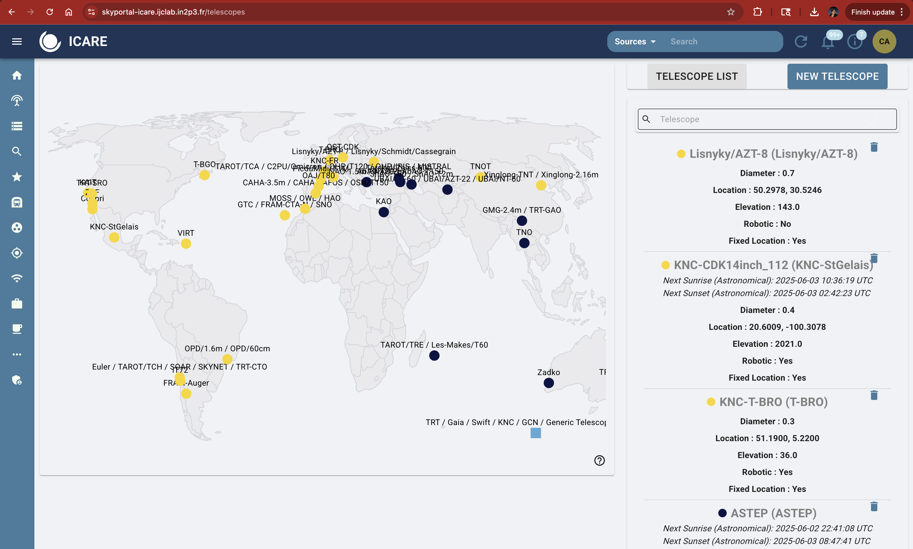

7.1 Which telescopes do I select to observe?#
When planning follow-up, it’s important to select telescopes based not only on when it is night at their location, but also on whether they can observe the transient at the required depth.
Observability (see Section 9.2.1) helps you determine which telescopes are in darkness and when. However, it does not tell you:
Whether a telescope is sensitive enough to reach the target magnitude,
How many images you should request,
What exposure time is needed to detect or constrain the event.
This table helps fill that gap by correlating telescope aperture (diameter) with the expected brightness of the transient, the number of exposures, and a typical exposure time per image.
Use it as a guide to determine what class of telescope is appropriate for the science goal (such as early GRB afterglow, faint kilonova, deep non-detection).
Telescope Usage Guidelines by Aperture and Target Brightness#
Telescope Aperture |
Target Brightness (AB mag) |
Suggested Number of Images |
Typical Exposure Time (each) |
Notes |
|---|---|---|---|---|
0.2–0.3 m |
≤ 17.5 |
4–6 |
60–180 s |
For early bright events. Use when fast response is needed. May saturate for sources < 14 mag. |
0.4–0.6 m |
17–19.5 |
4–6 |
120–300 s |
Good for moderate-depth follow-up, rapid GRB afterglows, or GW candidates with early optical counterparts. |
0.6–0.8 m |
18.5–21 |
6–8 |
180–600 s |
Suitable for most kilonova candidates and late-time afterglows. Needs clean skies and dark time for >20 mag. |
1.0–1.2 m |
19.5–22.5 |
6–10 |
300–900 s |
Ideal for faint afterglows, color evolution, and extended monitoring. Can resolve host galaxies. |
1.5–2.0 m |
21.5–23.5 |
8–12 |
600–1200 s |
Required for deep imaging of non-detections or distant GRBs. Coordinate carefully—may have limited access. |
>2.0 m |
>23 |
10+ |
900–1800 s |
Only use for special cases (e.g., redshift estimation, fading SNe, BOAT-class events). May require proposal. |
Where to Find Telescope Aperture in SkyPortal#
To determine which telescope to request based on the brightness of the event, it’s important to know the aperture of the telescope. This helps you estimate whether the telescope can reach the required magnitude (see Section 7.1 for guidelines).
You can find this information directly in SkyPortal:
Go to the “Telescopes” or “Instruments” page:
skyportal-icare.ijclab.in2p3.fr/telescopesClick on a telescope marker on the map or scroll through the list on the right.
The aperture will be listed under each telescope’s name (e.g.,
Diameter: 0.4for a 40 cm telescope).Use this diameter with the table in Section 7.1 to select the correct number of exposures and exposure times.
Example:
A telescope with 0.4 m diameter (like KNC-StGelais) is suitable for events up to ~19.5 mag, with 4–6 images of ~300 seconds each.

Tips for Shifters:#
Match the estimated brightness of the event (from GCNs or SkyPortal) to the appropriate aperture class.
When uncertain, start with a moderate plan: e.g., 6×300s in R for a 0.6–0.8 m class telescope.
If you expect fading, prioritize shorter exposures sooner.
Always document your choices and reasoning in the shift log and SkyPortal comments.
Don’t request deep observations ( >22 mag) from small telescopes — it wastes time and effort.
If in doubt, contact the Weekly Coordinator or Core Team for help selecting telescopes.